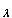

Assume that m < n and put |a1 - a2| = R. Then |a2 - a3| = |f (a1) - f (a2)| ≤ λR, and so on.
In general |am - am+1| ≤ λm-1R and |am - an| ≤ (λm-1 + λm + ... + λn)R.
Since the Geometric series
 λn is convergent, its partial sums form a Cauchy sequence and so the above expression can be made as small as we like by choosing m, n large. Thus (an) is a Cauchy sequence and hence has a limit α. By the usual argument α satisfies the equation f (α) = α and so is a fixed point for f.
λn is convergent, its partial sums form a Cauchy sequence and so the above expression can be made as small as we like by choosing m, n large. Thus (an) is a Cauchy sequence and hence has a limit α. By the usual argument α satisfies the equation f (α) = α and so is a fixed point for f.
If β is another fixed point then f (α) - f (β) = α - β and since we have |f (α) - f (β)| < |α - β| this is impossible unless α = β. Thus the fixed point is unique.